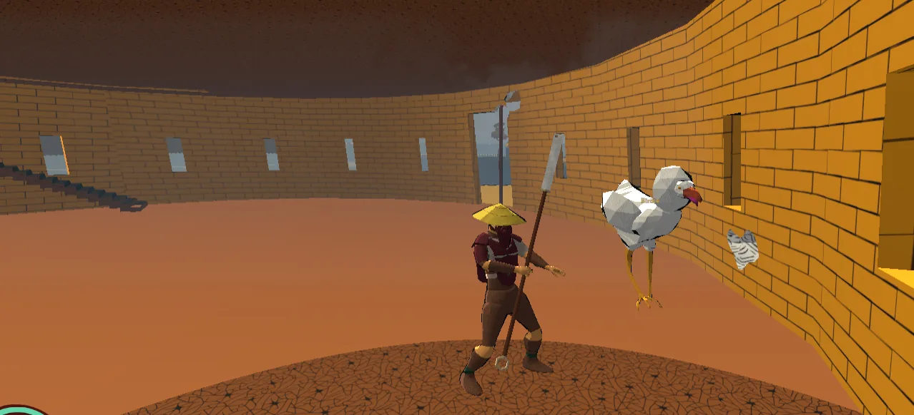
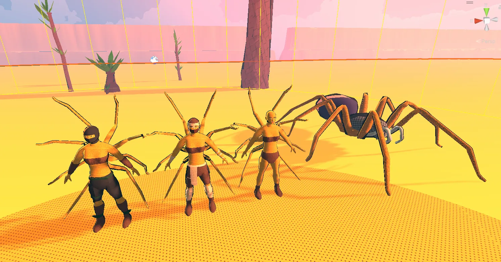
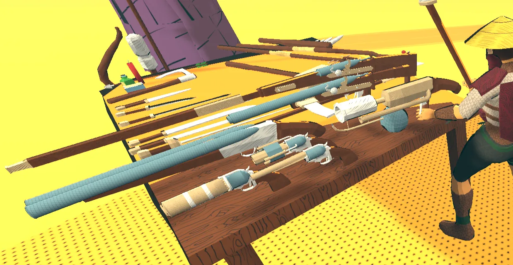
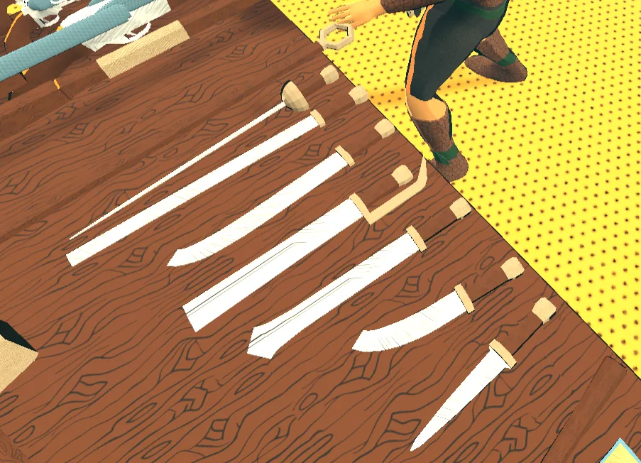
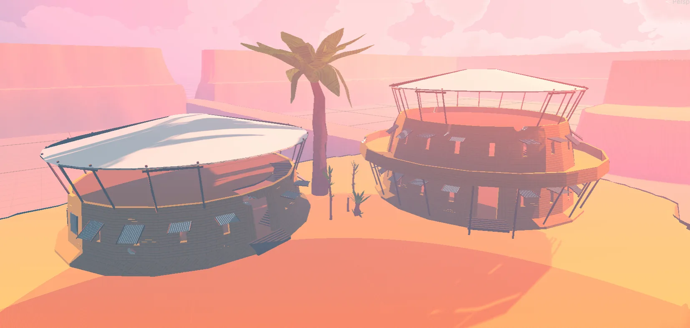
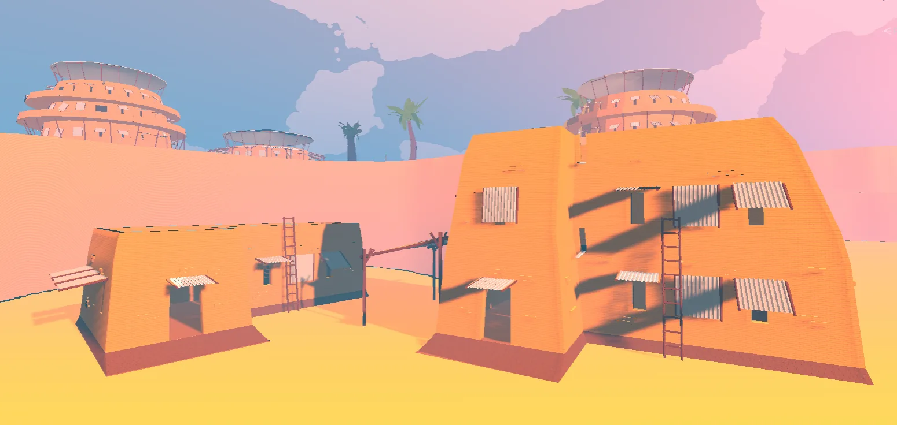

Už se ani nebudu znovu omlouvat
Ahoj.
Zase jsem moc nepsal, to vím. Pokud web sleduješ pravidelně, asi to působí dost bídně. Aspoň na Discord jsem ale něco dával a i na hře se kus práce udělal. Tenhle článek shrnuje poslední dva měsíce, které byly dost chaotické. Hodně energie šlo do budování komunity kolem YouTube kanálu zaměřeného na hry a ARPG obsah. Doufám, že se to jednou vrátí ve chvíli, kdy tohohle mutanta konečně vypustím do světa.
Mechaniky
Tady bohužel není úplně převratná novinka, ale pár nápadů už se rýsuje. Třeba death penalty a postihy za regeneraci. Aktuálně se po smrti nic moc neděje. Prostě se respawneš na hřbitovním bodě. Do budoucna ale uvažuju o dočasném snížení maximálního zdraví, energie nebo třeba posture hodnoty, což by z tebe po smrti udělalo na čas zranitelnější cíl.
Pořád jsou ve hře i plány na kritická zranění, třeba amputace končetin, ale zatím nemám jasno, jak to technicky uchopit. Možná nějaká malá procentuální šance na fatální poškození, které tě donutí nahradit končetinu protézou a nést s tím spojené postihy.
Začal jsem také sledovat YouTube kanál Timothyho Caina, který vedl Troika Game Studio a stál mimo jiné za Arcanum nebo Temple of Elemental Evil. Ten člověk je definice zkušeností a znalostí. V game devu je pro mě obrovská inspirace a dost možná díky němu ještě upravím některé systémy i celkové směřování hry.
Aktuálně třeba vážně přemýšlím o rozdělení hry do čtyř biomů. Poušť inspirovanou Tula Desert z Arcanum a taky Kenshi. Močál, protože se mi prostě líbí. Možná do něj přimíchám i louky, protože mám rád vzhled travnatých oblastí v Outward. Dále bunker biom vedoucí do podzemních tunelů a jeskyní dávné civilizace, kterou smetly podivné události. Tam je inspirace jak z Arcanum, tak i ze seriálu Silo. Posledním biomem by mohl být oceán, obrovský prostor k průzkumu na lodi. Nejsem si ale jistý, jestli něco takového technicky zvládnu. Znamenalo by to zásadní předělání controlleru nebo přechod na jiný asset z Unity Storu. A to je uprostřed vývoje dost risk.
Posun je i kolem building systému. Modulární stavění mě pořád láká, ale zároveň přemýšlím i o víc city-builder přístupu. Tedy ne nutně ručně skládat každou zeď, ale dát hráči možnost vybudovat celou budovu pohodlněji. To by mohlo fungovat hlavně pro hráče, kteří chtějí hrát RPG a mít k tomu navíc třeba kolonii, základnu nebo automatizované výrobní centrum. Samozřejmě bych ale chtěl zachovat i menší prvky jako vlastní bedny, skříně, dekorace a podobně.
Nápadů mám milion. Problém je čas a fakt, že nemám šanci do hry dostat všechno. Takže se zase budu muset vrátit k pořádnému todo listu a držet se priorit.
Modeloval jsem!
Aby to nevypadalo, že jen přemýšlím, něco konkrétního přibylo. Přidal jsem nové zvíře, nové monstrum a novou nepřátelskou rasu se dvěma variantami. Kromě toho jsem předělal většinu zbraní, budov a další části světa.
Nejdřív fauna. Tohle je nový pták. Jméno zatím nemá. Pokud na něj nezaútočíš, zůstává neutrální. Podobně jako goatzelly má sloužit jako zdroj materiálu a menšího množství XP. Časem možná půjde ochočit nebo i osedlat. Animace jsou zatím dost slabé, ale to se dá časem vylepšit.

Přibylo i nové monstrum: pavouk. Ano, není to nijak originální, ale pavouci k RPG prostě patří. Zároveň jsem chtěl vrátit do hry starou fantasy rasu Arachne. Původní představa byla humanoidní vršek ženské postavy napojený na tělo pavouka. Model samotného pavouka šel vytvořit poměrně snadno, ale animace byla mimo moje možnosti. Takže jsem si ten model nakonec koupil jako asset a upravil ho pro svoje potřeby. Animace byly výrazně lepší, než bych zvládl já.
Arachne byly nakonec složitější. Prakticky by to znamenalo napojit lidské animace horní poloviny těla na zbytek pavoučí kostry. To jsem nerozchodil. Po třech dnech boje jsem si udělal vlastní verzi Arachne: humanoidní postavy s pavoučíma nohama připojenýma na záda. Fungují ofenzivně, částečně reagují na pohyb rukou a výsledek vypadá dostatečně dobře i trochu děsivě. Umí dokonce nosit i zbroj. Můžou být nazí, v ninja armoru nebo v nomádské zbroji. Budou žít pouze v poušti a používat jak luk, tak melee útoky přes pavoučí nohy. AI je díky tomu složitější, ale většina už funguje.

Nově definované zbraně
Předělal jsem i zbraně. Většina z nich zatím nejde vybavit, ale přibylo hodně nových variant a jsem s nimi spokojený. Hlavně steampunkové střelné zbraně dopadly dobře, zejména puška a plamenomet. Každý typ zbraně bude mít i vlastní styl pohybu a bojových animací.


Nově definované budovy
Podobně jsem předělal i budovy. Většinou jde o moje starší modely, které jsem pročistil, zremeshoval a přetexturoval tak, aby byly lépe optimalizované a seděly novému vizuálnímu stylu. Všechny budovy jsou plně průchozí pro hráče i AI. NPC se po nich umí pohybovat přes schody i mezi patry a hráč může skákat z oken nebo ze střech.

